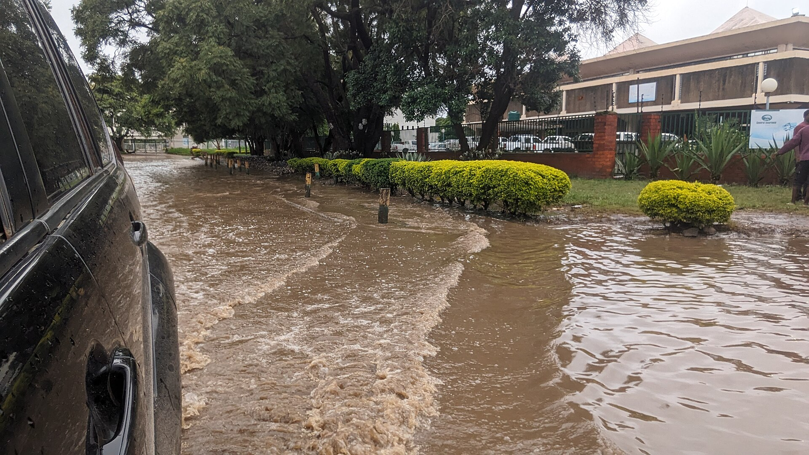
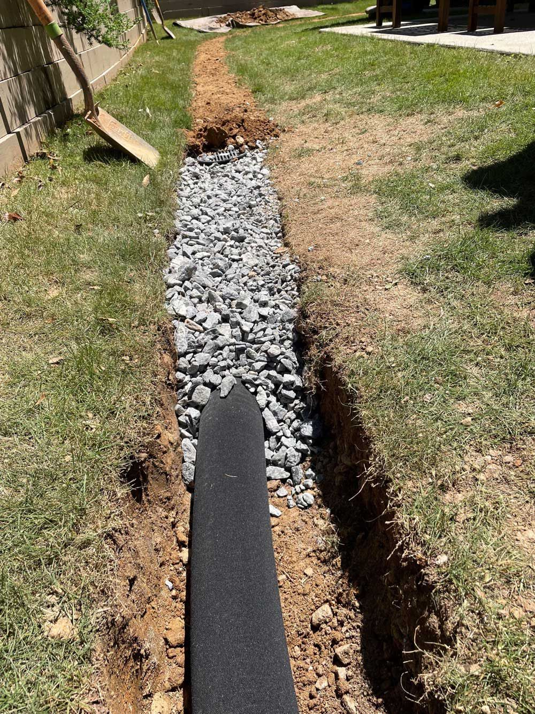
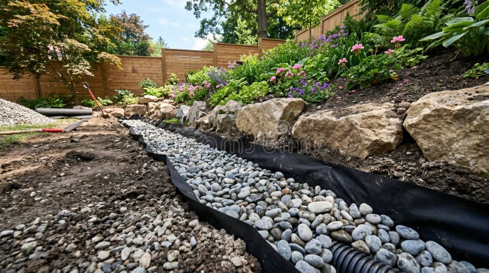

HydroHealth PROTECT is a community-driven solution that combines innovative drainage with natural filtration to combat flooding and waterborne diseases in Zambia's informal settlements.
Kabanana, one of Lusaka's largest informal settlements, faces devastating flooding every rainy season. Without engineered drainage systems, roads and homes turn into rivers, creating breeding grounds for cholera, typhoid, and dysentery.
The root causes are systemic: exclusion from urban planning, poor waste management, intensifying climate change, and rapid unplanned expansion. The result is a community living in constant fear of the next rainfall.
"I remember the fear and helplessness I felt as I waded through murky, debris-filled water after every heavy rainfall, just to get to school. The streets turned into rivers, and each step felt like a gamble with disease."
— HydroHealth PROTECT Team Member
Our innovative system addresses both flooding and water contamination simultaneously.

Our channels improve surface water flow, preventing the pooling that breeds disease and damages homes.

Using gravel, sand, charcoal, and mesh, we naturally filter contaminants from stormwater before it reaches the community.
Local youth and residents build, maintain, and own the systems, creating jobs and ensuring long-term sustainability.
Our simple yet effective process transforms flood-prone areas into safer, healthier communities.
We work with community members to map flood-prone zones and identify priority areas through surveys and peer-led interviews.
Local teams build filtration drainage channels using affordable, locally-sourced materials like gravel, sand, charcoal, and perforated pipes.
As stormwater flows through the channels, each layer traps solid waste, silt, and harmful pathogens, cleaning the water naturally.
Trained youth teams maintain the systems, conduct awareness campaigns, and monitor health outcomes with local clinics.
Our intervention delivers measurable improvements across environmental, health, and social dimensions.
Good Health & Well-being
Clean Water & Sanitation
Sustainable Cities & Communities
Climate Action
Hear from the community members whose lives are being transformed.
"Every rainy season, I feared for my children's health. With these new drainage systems, I finally feel hopeful for our future."
"Learning to build and maintain these filtration channels has given me skills I never thought I'd have. I'm proud to serve my community."
"The partnership between our clinic and HydroHealth PROTECT allows us to track real health improvements. We're seeing fewer waterborne disease cases."